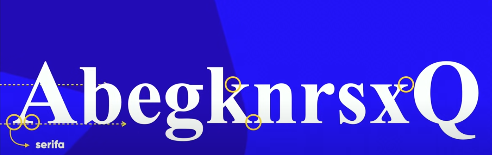
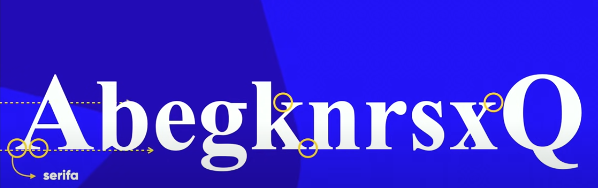

Adobe Color

Clique aqui
Paletton
Clique aqui
Coolors
Clique aqui
CorZilla
Linear

Circular

Degrade com percentual

backgrround-color: cor de fundo
color: cor da letra
border-radius: 10px; deixa a borda circular geralmente em px
border: 3px solid rgb(0, 0, 0); diz a grossura o tipo e a cor da borda
font-size: 16pt; diz o tamanho daa fonte geralmente em px ou em
text-align: justify; diz se é centralizado justificado etc
text-shadow: 2px 2px 3px rgb(39, 38, 41); coloca sobrqa na letra ... oi prrimeirro é a grossura prar baixo o outra pra direrita e o outro é o exppalhamento e por fim a cor
margin: auto; faz aa marrgem semrpre fiucar centralizada
padding: 10px; é tipo um espaçamento interno
box-shadow: 10px 10px 80px black; é a sombra de uma caixa primeiro diz a poarrte de baixo a direira o espálhamenbto e porr fim a cor
font-family: Arial, sans-serif; faamiliaa da fonte
No código a seguir o * serve para dizerr que todo op HTML vai receber essa configuração
*{
font-family: Arial, sans-serif;
}
width: 800px; largura
height: 800px; altura
Para o font-size
Tem-se as medidas Absoluiitas:
Medidas Relativas:
font-weight: bold Serve para deixar em negrito
font-style: italic Serve para deixar italico
text-decoration: underrline Serve para deixar sublinhado
um jeito de combinarr varrios comando é usando um único comnado os chamados "shorthads"font. Exemplo: font: italicd bolder 3em 'Work Sans', sans-serrif;
Uma observação é que nos shorthands não precisa colocar tudo mas precisa seguir a ordem dos fatores
Para altura de fonte a W3C recomenda o uso do px e do em
se quiser a fonte naao tenha italico negrito ou sublinhaado é só colocar normal
text-indent: 30px; Serve para colocar o pparágrafo
A tipografia de letras refere-se ao design, estilo e arranjo das fontes e caracteres em um texto. Em termos mais simples, trata-se da arte e técnica de escolher, criar e organizar as letras de maneira a melhorar a legibilidade, a estética e a comunicação de uma mensagem escrita.
 

O conjunto de glifos forma uma fonte


Combinações de fontes seguras são combinações de fontes que são compatíveis com a maioria dos sistemas operacionais e navegadores. Isso garante que o usuário verá o que foi pretendido, e que a página carregue mais rápido. Um site muito bom para ver combinações de fontes seguras é a W3School.com
Clique aqui
No site do Google Fonts é possivel impportar a fonte que quiser ppara o site. Depois de imporrtar é só colocar no começo da página de estilos. Assim como é feito no @charset "UTF-8"; para poder utilizar caracteres acentuados "ç" etc no CSS.
Um outro jeito é baixando de sites fontes pagas ou graatuitas. Exemplo de site é o dafonte.com
Para colocaar uma fonte baixada é só coloca como mostrado a seguir:
Existe a extesãao do Chrome: Fonts Ninja
Existem 3 sites:
em HTML é usado id e em CSS é usado #. Só pode usarr o id para um elemento. OBS.: maas pode terr outro id em outrra folhja HTML
em HTML é usado class e em CSS é usado . Pode usarr o id para mais de um elemento
Para fazer um parágrafo sumir e aaparecer de novo quando ppassarr o mouse em cima da div é só fazer como mostrado a seguir além disso, é mostrado como mecher no CSS de um filho da div.
Existem ppseudo-classes como: hover(aluma ação pé feita quan se passa o mouse porr cima), visited(quando se entra no site o link fica de outra cor), active(qaundo se clica no link e mantem segurardo o botão ele fica de uma cor pra dizer que está sendo clicado), after e before (um é ante e o outro depois de um elemnto para colocaarr algo. Pode ser um texto por exemplo)

Observação que o comando content serve para colocarr o conteúdo dentro daas '' para aaparecer.
Se quiser um site ppara usar simbolos de HTML5 pparar o site pode usarr o Erikasarti.com
Pseudo-classes só : enquanto que o pseudo-elemento usa-se ::
Aninhamento é quaando a gente coloca uma caixa dentro da outra.
Um user agent é o navegador que está sendo utilizado
Um site para fazer esses prótótipos é o: MockFlow e outro site bom é o Figma.
Para usarr variáveis em CSS é só criar uma variável global em CSS: